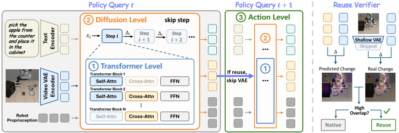

Diffusion steps
Redundancy-Aware Attention Skipping
Skips low-impact self- and cross-attention computation while preserving components important for action generation.
Training-free inference acceleration for World Action Models
VaLuE Lab, Peking University
World Action Models (WAMs), which jointly predict future world states and robot actions, are emerging as a promising alternative to Vision-Language-Action models. Yet current WAM acceleration methods typically exploit redundancy along only one computational axis, leading to limited speedups or degraded task performance.
We introduce MARS, a training-free, multi-level inference framework that removes redundant computation across Transformer blocks, diffusion denoising steps, and consecutive action chunks. The three mechanisms integrate into pretrained WAMs in a plug-and-play manner, delivering up to 4.0× speedup on LIBERO/LIBERO-PRO and 2.1× on RoboCasa while preserving task performance.

MARS targets complementary redundancy within a diffusion step, across denoising steps, and across consecutive action chunks.

Diffusion steps
Skips low-impact self- and cross-attention computation while preserving components important for action generation.
Across denoising steps
Routes each query between direct one-step generation and residual-reuse multi-step sampling according to motion granularity.
Across action chunks
Uses shallow VAE features to verify temporal consistency before reusing predicted future visual tokens.
End-to-end acceleration on Cosmos Policy, measured with matched three-seed evaluation.
| Method | Success Rate (%, ↑) / Speedup (↑) | Success Rate (↑) |
Speedup (↑) | Latency (↓) | FLOPs (↓) | |||
|---|---|---|---|---|---|---|---|---|
| Goal | Object | Spatial | Long | |||||
| Cosmos Policy | 98.20 / 1.00 | 99.87 / 1.00 | 97.47 / 1.00 | 96.67 / 1.00 | 98.05% | 1.00× | 1.4001 s | 100.00% |
| + DiCache | 98.07 / 1.70 | 99.87 / 1.66 | 97.80 / 1.67 | 97.27 / 1.72 | 98.25% | 1.69× | 0.8273 s | 48.12% |
| + C3Cache* | 97.80 / 2.19 | 99.00 / 2.16 | 97.53 / 2.25 | 94.47 / 2.30 | 97.20% | 2.24× | 0.6256 s | 33.18% |
| + X-Cache* | 97.87 / 1.11 | 99.67 / 1.17 | 97.47 / 1.12 | 97.00 / 1.21 | 98.00% | 1.17× | 1.2017 s | 80.20% |
| + Ours (Speed) | 96.73 / 3.89 | 99.07 / 4.08 | 97.60 / 3.87 | 96.27 / 4.07 | 97.42% | 4.00× | 0.3498 s | 18.39% |
| + Ours (Acc.) | 98.47 / 3.06 | 99.60 / 3.29 | 97.80 / 3.10 | 96.60 / 3.19 | 98.12% | 3.17× | 0.4414 s | 19.19% |
| Method | Success Rate (%, ↑) / Speedup (↑) | Success Rate (↑) |
Speedup (↑) | Latency (↓) | FLOPs (↓) | |||
|---|---|---|---|---|---|---|---|---|
| Goal | Object | Spatial | Long | |||||
| Cosmos Policy | 43.67 / 1.00 | 46.13 / 1.00 | 47.40 / 1.00 | 45.33 / 1.00 | 45.63% | 1.00× | 1.4044 s | 100.00% |
| + DiCache | 44.13 / 1.67 | 46.27 / 1.66 | 47.73 / 1.63 | 45.07 / 1.73 | 45.80% | 1.68× | 0.8347 s | 50.32% |
| + C3Cache* | 42.80 / 2.22 | 45.53 / 2.20 | 47.53 / 2.28 | 42.60 / 2.30 | 44.62% | 2.26× | 0.6222 s | 32.86% |
| + X-Cache* | 43.73 / 1.17 | 46.20 / 1.22 | 47.80 / 1.17 | 44.33 / 1.26 | 45.52% | 1.22× | 1.1549 s | 75.55% |
| + Ours (Speed) | 44.20 / 3.91 | 45.67 / 3.86 | 47.33 / 3.96 | 44.93 / 3.99 | 45.53% | 3.94× | 0.3564 s | 18.80% |
| + Ours (Acc.) | 43.67 / 3.05 | 47.00 / 3.08 | 47.60 / 3.06 | 44.60 / 3.11 | 45.72% | 3.08× | 0.4558 s | 19.05% |
| Method | S.R. (↑) | Speedup (↑) | Latency (↓) | FLOPs (↓) |
|---|---|---|---|---|
| Cosmos Policy | 66.69% | 1.00× | 2.2958 s | 100.00% |
| + DiCache | 66.47% | 1.50× | 1.5305 s | 49.99% |
| + C3Cache* | 65.00% | 1.81× | 1.2653 s | 33.64% |
| + X-Cache* | 66.37% | 1.20× | 1.9202 s | 72.86% |
| + Falcon | 66.47% | 1.21× | 1.8968 s | 74.56% |
| + Ours | 66.94% | 2.10× | 1.0911 s | 22.50% |
With Different Base Models
MARS transfers beyond Cosmos Policy to additional WAM and VLA backbones without retraining.


Paper and BibTeX will be added upon release.
Follow the repository for updates →